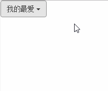
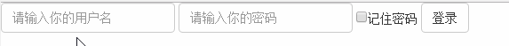

第一章 入门准备
框架简介
Bootstrap特性：
- 一套完整的基础CSS插件
- 丰富的预定义样式表
- 基于jQuery的JS插件集
- 非常灵活的响应式栅格系统，崇尚移动先行的思想
文件结构
2.x用来展示icon小图标的.png图片由fonts目录的5种类型的字体文件取代，这种方式叫做@font-face版本的icon实现。
所谓@font-face，其实是通过CSS里的@font-face语法，将安全的Web字体即时下载到客户端，从而进行引用显示。
好处是：图标可以被任意缩放，改变颜色（像修改文字样式那样修改即可）
HTML模板
|
|
表示默认情况下，UI布局的宽度和移动设备的宽度一致，缩放大小为原始大小
记住：content中各项必须用分号+空格形式隔开！否则不起作用
题外话：
看到Bootstrap官网上src以双斜杠开头的url，如下：
这样写的原因是什么？详见The Protocol-relative URL
CSS和JS基本语法
媒体查询
123456@media(max-width:767px){/* 在小于等于767像素的屏幕里，这里的样式才生效*/}@media(min-width:768px) and (max-width:991px){/*768px～991px*/}事件绑定
选择器变成了document，好处是只需在document绑定一个单击事件。 利用冒泡机制，在单击的时候检查是否是td元素，若是才处理。 而前面把td作为选择器的时候，一个页面有多少td元素就会绑定多少个单击事件，这样性能会大大降低。此模式即为享元模式。
另外，注意到我们的绑定事件名称为click.tx，而非click，这样的命名空间方便在触发时只触发自己所关心的元素事件$('td').on("click",function(e){//jQuery绑定click事件});
$(document).on("click.tx","td",function(e){//Bootstrap绑定click事件})获取自定义属性值
HTML5新支持的语法 以data-开头的自定义属性$("#test").data("role")获取data-role属性的值$("#test").data()获取所有以data-开头的属性的值
第二章 整体结构
整体结构
- CSS12栅格系统
把网页的总宽度平分为12份，开发人员可以自由按份组合。另外，栅格系统所使用的总宽度可以不固定，可以针对一个div元素使用12等分的栅格(Bootstrap是按照百分比进行12等分的，保留15位小数点精度) - 基础布局组件
排版，表格，按钮，表单等基础组件的样式设置 - jQuery
Bootstrap所有JavaScript插件都依赖于jQuery - 响应式设计
指的是一个网站能够兼容多个终端 - CSS组件
- JavsScript组件
栅格系统
实现原理
通过定义容器大小，平分12份，再调整内外边距，最后结合媒体查询，实现了栅格系统。
这里利用了margin左右负值可以拉伸未定义宽度的元素。- 一行row必须包含于.container中
- 列(column)必须是行(row)的直接子元素
- container宽度:
自动(<=768px),750px(768px~992px),970px(992px~1220px),1170px(>=1220px)自动意思就是若12格布满则屏幕100%充满
基本用法(以md为例)
列组合:col-md-*123456<div class="container"><div class="row"><div class="col-md-8">col-md-8</div><div class="col-md-4">col-md-4</div></div></div>12345678910111213/*实现方法:源码1937行起*//*左浮动+宽度百分比*/@media (min-width: 992px) {.col-md-1, .col-md-2, .col-md-3, .col-md-4, .col-md-5, .col-md-6, .col-md-7, .col-md-8, .col-md-9, .col-md-10, .col-md-11, .col-md-12 {float: left;}.col-md-12 {width: 100%;}.col-md-11 {width: 91.66666667%;}/*以下省略*/列偏移:
col-md-offset-*12345678910<div class="container"><div class="row"><div class="col-md-4">col-md-4</div><div class="col-md-4 col-md-offset-4">col-md-4 col-md-offset-4</div></div></div>1234567891011/*实现原理:源码2055行起*/.col-md-offset-12 {margin-left: 100%;}.col-md-offset-11 {margin-left: 91.66666667%;}.col-md-offset-10 {margin-left: 83.33333333%;}/*后省略*/列嵌套:在一个列中可以再声明一个或多个row
123456789101112<div class="container"><div class="row"><div class="col-md-5">第一层:col-md-5<!--将该层分成12份--><div class="row"><div class="col-md-6">第二层:col-md-6</div><div class="col-md-6">第二层:col-md-6</div></div></div></div></div>列排序:
col-md-pull-*&col-md-push-*
push向右推动，pull往左拉。12345678/*实现原理:源码1977行起*/.col-md-pull-12 {right: 100%;}.col-md-pull-11 {right: 91.66666667%;}/*其余省略，push是left改变*/栅格响应式设计
分为四种不同栅格样式:xs,s,md,lg
通过跨设备组合设计，即可实现响应式布局。
关于清浮动:123456789<!--默认外层包裹.container--><div class="row"><div class="col-xs-6 col-sm-3">div1</div><div class="col-xs-6 col-sm-3">div2</div><!--清除样式只对超小屏幕设备生效--><div class="clearfix visiable-xs"></div><div class="col-xs-6 col-sm-3">div3</div><div class="col-xs-6 col-sm-3">div4</div></div>
CSS组件架构的设计思想
CSS组件设计思想：AO模式。（A-Append，O-Overwrite）
- 基础样式
- 颜色样式 (组件名称-颜色类型)
另外对于可点击元素如btn，还特殊处理了按钮在hover，focus，active状态时的颜色 - 尺寸样式（组件名称-大小类型）
为组件设置大小:xs,sm,md,lg - 状态样式
- 特殊元素样式
- 并列元素样式
很多情况下，一个组件内部需要放置多个子元素，此时就需要处理这样并列元素的间距问题 - 嵌套子元素样式
- 动画样式
JavaScript插件架构
HTML布局规则
默认情况下，所有插件都可以通过设置特定的HTML代码和相应的属性/data属性来实现(加载网页的时候，JS代码会自动检测标记并绑定相应事件，而无需添加额外代码)12345678910111213<div class="btn-group"><button type="button" class="btn btn-default dropdown-toggle" data-toggle="dropdown">我的最爱 <span class="caret"></span></button><ul class="dropdown-menu"><li><a href="#">NodeJs</a></li><li><a href="#">HTML5</a></li><li><a href="#">CSS3</a></li><!--设置分隔线--><li class="divider"></li><li><a href="#">PHP</a></li></ul></div>效果如下:
JavaScript默认先检测data-target属性确认动作目标，若没有则检测href属性，若仍没有，则默认为父元素
JavaScript实现步骤
声明立即调用函数
1234(function($){//do something})(window.jQuery)//将window.jQuery作为实参传入，形参为$,防止变量全局污染定义插件类及相关原型方法(以alert.js为例)
12345678var dismiss = '[data-dismiss='alert']';var Alert = function(el){//传入元素，若元素内部有dismiss,则click事件会触发原型上的close方法$(el).on('click',dismiss,this.close);}Alert.prototype.close = function(e){//关闭警告框}在jQuery上定义插件并重设插件构造函数
这一步专门为了用JS代码触发事件的人准备，但是若不声明这一步，第四步的noCOnflict也将无法使用。123456789var old = $.fn.alert;//保留其他插件的$.fn.alert代码(如果有定义),以便在noConflict之后可以继续使用$.fn.alert = function(option){return this.each(function(){//根据选择器遍历所有符合的元素并绑定事件})}$.fn.alert.Constructor = Alert;//重设插件的构造函数指向防冲突处理(noConflict)
1234$.fn.alert.noConflict = function(){$.fn.alert = old; //恢复以前的代码return this;//将$.fn.alert.noConflict()设置为Bootstrap的alert插件}绑定各种触发事件(data-api)
1$(document).on('click.bs.alert.data-api',dismiss,Alert.prototype.close);
CSS布局
概述
- HTML5文档类型
Bootstrap使用了HTML5特定的HTML元素和CSS属性，故使用它时需在HTML文件顶部声明DOCTYPE属性为HTML5 - 移动先行
响应式图片
为了让图片可以自适应缩放，Bootstrap在3.x版中添加了.img-responsive样式123456/*源码1119行起:*/.img-responsive{display:block;max-width:100%;height:auto;}排版与链接
- 在body上取消了margin设置，即改为margin:0
- 在body上设置了背景色为白色，即background-color:#FFF
- 在布局排版方面也进行了设置，字体大小为14px
- Normalize.css
为了改进跨浏览器呈现，Bootstrap采用了第三方CSS库Normalize
Normalize.css是一个专门用于将不同浏览器的默认CSS特性设置为同一效果的CSS库 - 居中容器
一个页面或元素要居中显示，可以在外部容器上应用.container样式即可
基础排版
标题
重新定义<h1>标题，同时同步定义.h1-.h6样式；
与此相匹配，定义<small>标签为副标题,<small>内容字体均为灰色，行间距为1，大小随父级改变1<h1>h1. Bootstrap heading <small>Secondary text</small></h1>页面主题
默认情况下全局设置字体14px,line-height为1.428(20px)
使用.lead可以使一个段落突出显示:1234567/*源码1293行起:*/.lead {margin-bottom: 20px;font-size: 16px;font-weight: 300;line-height: 1.4;}强调文本
<small>``<strong>``<em>``<cite>
文本对齐方式样式text-lefttext-centertext-righttext-justify缩略语
<abbr>
鼠标移入缩略词时，显示声明在title内的属性值。123<abbr title="JavaScript">JS</abbr><!--可以加入.initialism使其略微缩小--><abbr title="JavaScript" class="initialism">JS</abbr>地址元素
<address>
定义其样式，主要是行间距和底部margin
用法:1234<address><strong> Tom </strong></br><a href="mailto:#">xxx@gmail.com</a></address>引用
<blockquote>1234<blockquote class="pull-right"><p>有一种不遵守多数原则的东西，那就是人的良心</p><span>——</span><cite>蒂姆·库克</cite></block>列表
去除普通列表项前的圆点，只需在ul中添加类.list-unstyled
代码
- 使用
<code>显示单行内联代码 - 使用
<kbd>显示用户输入代码 - 使用
<pre>显示多行代码块
表单
- 基础表单
在<select>,<input>,<textarea>元素上应用.form-control样式，可使其显示宽度为100%。
当然，外层最好包一个.form-group的div，内置样式使得各组件条理显示。 内联表单
123456789101112<form action="" class="form-inline"><div class="form-group"><input type="text" class="form-control" placeholder="请输入你的用户名"></div><div class="form-group"><input type="text" class="form-control" placeholder="请输入你的密码"></div><div class="checkbox"><label for=""><input type="checkbox">记住密码</label></div><button type="button" class="btn btn-default">登录</button></form>
需要注意几点:- 设置内联表单后，默认各组件
width为auto，所以我们可以手动设置宽度 - 内联表单只有在屏幕宽度>768px下才可用，否则将垂直排列
- 设置内联表单后，默认各组件
- 水平排列的表单
指的是label和控件组水平并排布局12345678<form action="" class="form-horizontal" rol="row"><div class="form-group"><label class="col-sm-2 control-label">ID</label><div class="col-sm-5"><input type="text" class="form-control" placeholder="请输入你的用户名"></div></div></form>
To be continued…